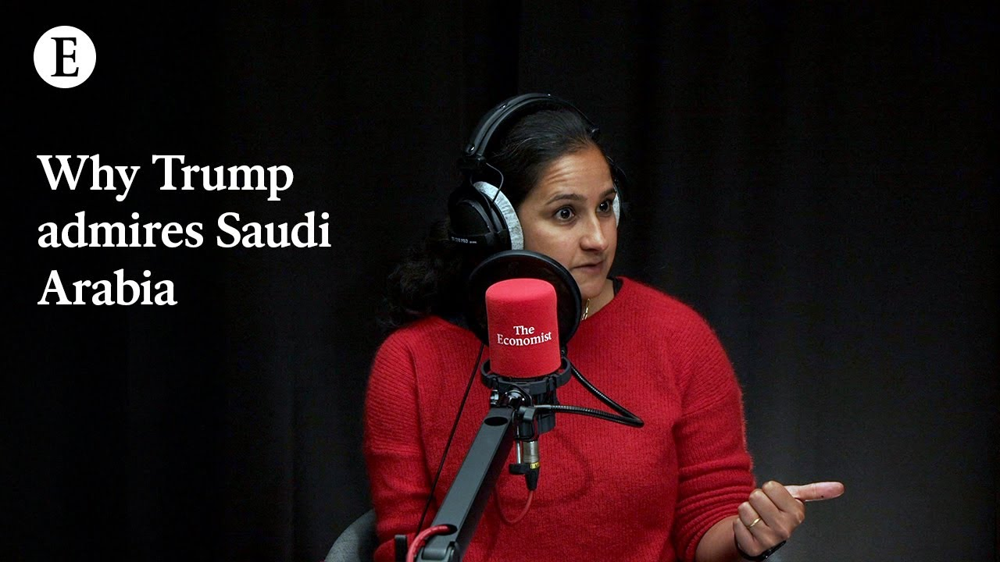

【经济学人：特朗普为何钦佩沙特阿拉伯？】
Summary: The Saudi Arabia you knew has transformed into a stabilizing force in the Middle East, undergoing a social revolution and economic diversification, despite its autocratic reputation.
摘要： 你所熟知的沙特阿拉伯已转变为中东的稳定力量，正在进行社会革命和经济多元化，尽管其声誉仍带有专制色彩。

⏱️ Estimated Reading Time: 12 min
📚 四级生词 📚 六级生词 📚 雅思生词 📚 托福生词 📚 专八生词 📚 SAT生词 📚 考研生词 📚 GRE生词 📚 高考生词 📚 其它生词生词
The Saudi Arabia that you used to know no longer exists.
你曾经熟知的沙特阿拉伯已不复存在。
In its region, the Middle East, it's playing a stabilizing constructive force.
在中东地区，它正扮演着稳定且建设性的角色。
At home, it's pulling off a social revolution that has few parallels.
在国内，它正在推动一场罕见的社会革命。
It's trying to transform the economy away from being a petriestate to a modern 21st century globalized economy.
它正试图将经济从石油依赖转变为21世纪的现代化全球化经济。
That change is slow, but it's beginning.
这一转变虽缓慢，但已开始。
Right now, before we even talk about the positive direction that Saudi Arabia might be going in, got a point out it does not have a good starting reputation to work with.
目前，在讨论沙特阿拉伯可能走向的积极方向之前，必须指出它的起点声誉并不佳。
When you think of Saudi Arabia, you might think of a place that subjugates women, is politically repressed, a place that used to finance terrorism and sponsor it around the world.
提到沙特阿拉伯，你可能会想到一个压迫女性、政治压制、曾资助并输出恐怖主义的地方。
And it's very important to be clear up front.
必须事先明确这一点。
Saudi Arabia is still an autocracy.
沙特阿拉伯仍是一个专制国家。
It's crown prince and de facto ruler Mohammed bin Salman, often called MBS, doesn't tolerate dissent.
其王储兼实际统治者穆罕默德·本·萨勒曼（常称MBS）不容忍异议。
Nonetheless, the kingdom has changed in some quite surprising ways.
尽管如此，这个王国已发生了一些令人惊讶的变化。
In its region, it's now more of a constructive and a stabilizing force.
在该地区，它现在更像是一股建设性和稳定的力量。
It seeks peace.
它寻求和平。
At home, society has been transformed.
在国内，社会已发生转变。
Things have liberalized and opened up to a surprising degree.
社会自由化和开放程度令人惊讶。
It is sort of a surprising take, the how well things are going.
这种进展之顺利令人意外。
Let's pick it apart.
让我们深入分析。
Start with the geopolitics and stabilizing force, itself, a sort of surprising turn of phrase for it.
先从地缘政治和稳定力量说起，这种表述本身就很意外。
What do you mean by that?
这是什么意思？
So Saudi Arabia is one of the richest countries in the Gulf.
沙特阿拉伯是海湾地区最富有的国家之一。
It's the most populist country in the Gulf.
它是海湾地区最具民粹主义色彩的国家。
It used to use that clout to be a menace to other parts of the world.
它曾利用这种影响力威胁世界其他地区。
So soon after MBS's father, King Salman ascended the throne, he began a disastrous war in Yemen.
MBS的父亲萨勒曼国王登基后不久，便在也门发动了一场灾难性战争。
Then in 2018 came the really shocking murder of Jamal Khrushodji, a Saudi journalist and dissident in Istanbul, at the orders of the Saudi regime.
随后在2018年，沙特记者兼异见人士贾马尔·卡舒吉在伊斯坦布尔被沙特政权下令谋杀，震惊世界。
And that murder, that killing, still is a stain on Saudi Arabia's reputation.
这起谋杀仍是沙特阿拉伯声誉上的污点。
But you also have to look at the recent actions of the kingdom.
但你也必须关注该国近期的行动。
And here, it's really striking how it's now seeking stability in its neighbourhood and calm in its neighbourhood.
引人注目的是，它现在正寻求周边地区的稳定与和平。
So on the Houthis, for example, the kingdom is now counselling de-escalation.
例如，在胡塞武装问题上，沙特现在主张降级冲突。
It's been playing a very helpful role in Syria.
它在叙利亚发挥了积极作用。
It's engaged with the new government.
它与新政府接触。
It's promised to invest if America's sanctions are lifted and it's paid off Syria's debts to the World Bank.
它承诺若美国解除制裁将投资叙利亚，并已偿还叙利亚欠世界银行的债务。
And when Donald Trump is in reality, it seems likely that MBS is going to be counselling still more deal-making and peacemaking with Iran, and end of the war in Gaza.
而若特朗普再次执政，MBS很可能推动与伊朗达成更多协议、促进和平，并结束加沙战争。
On the question of that visit with Mr. Trump, why does MBS have his ear, do you think?
关于特朗普的访问，你认为MBS为何能影响他？
It's really striking, Jason.
这很引人注目，杰森。
You might remember that in Donald Trump's first term, as well, he chose Saudi Arabia as the place for his first state visit.
你可能记得，特朗普在首个任期内也选择沙特作为首次国事访问地。
I get the sense that he admires their oil wealth.
我感觉他钦佩沙特的石油财富。
They probably bond over their fondness for flashy and zany real estate projects.
他们可能因对浮夸房地产项目的喜爱而结缘。
And it's striking as well that the kingdom has been home to these talks, America's talks with Ukrainians and Russians on peace in Ukraine.
同样值得注意的是，沙特还主办了美国与乌克兰、俄罗斯关于乌克兰和平的会谈。
What are the reasons behind this more generally?
更广泛地说，这背后的原因是什么？
Why the foreign policy rethink?
为何重新思考外交政策？
Why become a force for stability?
为何成为稳定力量？
I think it connects with what MBS is trying to do at home.
我认为这与MBS在国内的尝试有关。
He's trying to pull off this bold, social, and economic transformation.
他正试图推动这场大胆的社会经济转型。
Saudi Arabia's got lots of young people.
沙特有大量年轻人。
About two-thirds of the local population are under the age of 35.
约三分之二的本地人口年龄在35岁以下。
The oil money will not last forever.
石油财富不会永远持续。
And MBS knows this.
MBS明白这一点。
If there's instability and war in the Middle East, that runs the risk of inflaming local Saudis.
如果中东动荡或爆发战争，可能激怒沙特民众。
It means fewer customers for the products, MBS hopes that Saudi Arabia's one day going to produce it means fewer tourists to the flashy hotels that are being built in Saudi Arabia now.
这意味着沙特未来生产的商品客户减少，也意味着如今在建的豪华酒店游客减少。
So for all of these reasons, the kind of the desire to make change at home has led to a desire for stability abroad.
因此，出于这些原因，国内的改革愿望促成了对国际稳定的追求。
So about the changes at home, the social and economic transformation you mentioned, let's talk about that.
那么关于你提到的国内社会和经济变革，我们来详细聊聊。
Socially, what's going on?
社会层面发生了什么？
There have been some headline things women can now drive.
有些头条新闻，比如女性现在可以开车。
You can go see Hollywood movies, but broadly, what's going on?
你可以看好莱坞电影，但总体而言，情况如何？
It's really extraordinary, actually, Jason.
这确实非同寻常，杰森。
20 years ago, women were largely shut out of the labour market.
20年前，女性基本被排除在劳动力市场外。
They couldn't travel freely without a male guardian.
她们无法在没有男性监护人的情况下自由旅行。
They couldn't drive.
她们不能开车。
Cinemas and concerts were banned.
电影院和音乐会被禁止。
Religious police roamed the streets.
宗教警察在街头巡逻。
Any fun that was being had was being had either at home or abroad.
任何娱乐活动要么在家中进行，要么在国外享受。
And now when you go to the kingdom, women can travel freely.
而现在当你来到沙特，女性可以自由旅行。
They can work where they like.
她们可以在喜欢的地方工作。
They can live where they like.
她们可以在喜欢的地方生活。
The vice squad are nowhere to be seen.
道德警察已不见踪影。
They're disbanded.
他们被解散了。
And unfortunately, even Saudi Arabia now is not free of Marvel superhero films being screened on the big screen.
遗憾的是，如今沙特也免不了在大银幕上映漫威超级英雄电影。
I was looking at the listings in Riyadh and it seems like guns and roses are going to play there in the next few days.
我看了利雅得的演出列表，枪与玫瑰乐队似乎几天后将在那里演出。
In a sense now, if you're a young person or a woman living in Saudi Arabia, you can enjoy some of the freedoms that the rest of the world does.
某种意义上，现在如果你是沙特年轻人或女性，可以享受与世界其他地方相似的某些自由。
And when you go there, it's quite striking.
当你去那里时，会感到非常震撼。
The crowds of people milling around having a good time.
人群熙攘，享受美好时光。
But I sense some reservations on your part about the economic transformation.
但我感觉你对经济转型有所保留。
What's the hold up?
有什么阻碍？
So the really striking thing about the social change was how quickly it happened and how there wasn't really any backlash even though that was sort of feared.
社会变革的惊人之处在于其速度之快，且尽管曾担心反弹，但实际并未发生。
Now, the economy has been much slower to change.
而经济变革则缓慢得多。
Since 2016, the government has spent hundreds of billions of dollars trying to diversify the economy away from oil.
自2016年以来，政府已花费数千亿美元试图实现经济多元化，摆脱石油依赖。
And it's done two types of things.
它做了两类事情。
So the first is that the sovereign wealth fund has backed more than 100 companies in a range of sectors.
首先是主权财富基金投资了100多家不同领域的公司。
It's trying to bring up these new industries.
试图培育这些新兴产业。
So for example, it's backed an electric vehicle maker.
例如，它投资了一家电动汽车制造商。
It's backed a semiconductor company and so on.
它还投资了一家半导体公司等。
That's one aspect of the economic change.
这是经济变革的一个方面。
And another involves splurging on these so-called giga projects.
另一项是斥巨资于所谓的“巨型项目”。
And that, for example, includes Nyon, which is a big sort of futuristic city settlement at the moment is basically a building site.
比如“尼尤姆”，目前是一个大型未来主义城市建筑工地。
But was meant to involve this very long kind of thin building that stretched across 170 kilometers.
但规划中包括一座长达170公里的线型建筑。
And that's one example of the giga project.
这是巨型项目的一个例子。
And the budget for these things is huge.
这些项目的预算非常庞大。
So it was expected to be around $900 billion, which just to give you some context, Saudi Arabia's annual GDP at the moment is just over $900 billion.
预计约9000亿美元，作为对比，沙特目前年GDP略高于9000亿美元。
So it's a really large amount of money.
这是一笔巨额资金。
The problem is that more than a decade into this economic change, the economy is still quite stubbornly oily.
问题是，经济转型十多年后，经济仍严重依赖石油。
And part of the problem is that so much money is being spent, that it's causing overheating in the economy, it's driving up costs.
部分问题在于巨额支出导致经济过热，推高成本。
It may be discouraging the private sector from stepping in.
这可能抑制私营部门参与。
It seems that foreign investors aren't much impressed by this new agenda to sort of complicate everything else.
外国投资者似乎对这一新议程不太感冒，反而让一切更复杂。
The oil price is now falling as well.
油价现在也在下跌。
So the fiscal strain of this program is really starting to mount up.
因此，该计划的财政压力正不断累积。
So clearly, MBS, Saudi Arabia in a more general sense, really invested as it were in all of this transformation.
显然，MBS乃至整个沙特阿拉伯已全力投入这场转型。
What do you reckon is at stake if it doesn't actually come off?
你认为如果转型失败会有什么后果？
I think the stake for the country itself and MBS are really high.
我认为对国家和MBS而言风险极高。
The social change has won MBS a lot of goodwill.
社会变革为MBS赢得了大量好感。
People are really enjoying their newfound freedoms.
人们非常享受新获得的自由。
But if the economy doesn't follow and if people's livelihood start to suffer or they don't enjoy prosperity, then I think that goodwill could very quickly dissipate.
但如果经济未能跟进，民生开始恶化或无法繁荣，这种好感可能迅速消失。
And the question then is, if you see it unrest, could that lead the government to crack down?
问题是，若出现动荡，政府是否会镇压？
And so the kingdoms come a really long way.
沙特已取得长足进步。
That economic change really needs to continue.
经济变革必须持续下去。
Ruchon, thanks very much for your time.
鲁琼，非常感谢你的时间。
Thanks, Jason.
谢谢，杰森。